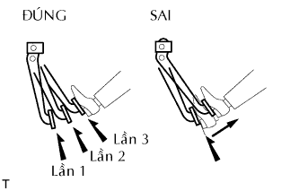
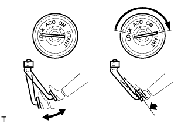
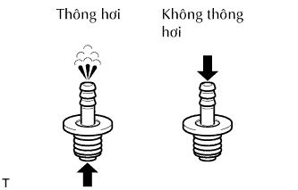

BỘ TRỢ LỰC PHANH > KIỂM TRA TRÊN XE |
| 1. KIỂM TRA BỘ TRỢ LỰC PHANH |
|  |
Kiểm tra sự kín khí.
Khởi động động cơ và tắt máy sau một đến 2 phút. Đạp bàn đạp phanh vài lần.
Chắc chắn rằng bộ trợ lực kín khí. Kiểm tra rằng khoảng cách bàn đạp có thể nhất xuống giảm từ từ với lần đạp bàn đạp tiếp theo.
Nếu bàn đạp không như tiêu chuẩn, hãy kiểm tra van một chiều.
Nếu van một chiều là bình thường, hãy thay thế bộ trợ lực phanh.
Khởi động động cơ. Đạp và giữ bàn đạp và tắt máy.
Chắc chắn rằng bộ trợ lực kín khí. Hãy giữ bàn đạp 30 giây và kiểm tra không có thay đổi khoảng cách dự trữ bàn đạp.
Nếu bàn đạp không như tiêu chuẩn, hãy kiểm tra van một chiều.
Nếu van một chiều là bình thường, hãy thay thế bộ trợ lực phanh.
|  |
Kiểm tra hoạt động.
Đạp bàn đạp phanh vài lần với khoá điện ở vị trí OFF và kiểm tra rằng không có sự thay đổi về khoảng dự trữ bàn đạp.
Hãy đạp và giữ bàn đạp xuống, và khởi động động cơ. Kiểm tra rằng bàn đạp chỉ có thể đạp xuống được một chút.
Nếu bàn đạp không như tiêu chuẩn, hãy kiểm tra van một chiều.
Nếu van một chiều là bình thường, hãy thay thế bộ trợ lực phanh.
| 2. KIỂM TRA CỤM VAN MỘT CHIỀU CHÂN KHÔNG PHANH |
|  |
Kiểm tra van một chiều.
Trượt kẹp và ngắt ống chân không ra.
Tháo van một chiều ra khỏi bộ trợ lực phanh.
Kiểm tra rằng có thông khí từ bộ trợ lực phanh đến động cơ, và không có thông khí từ động cơ đến bộ trợ lực.